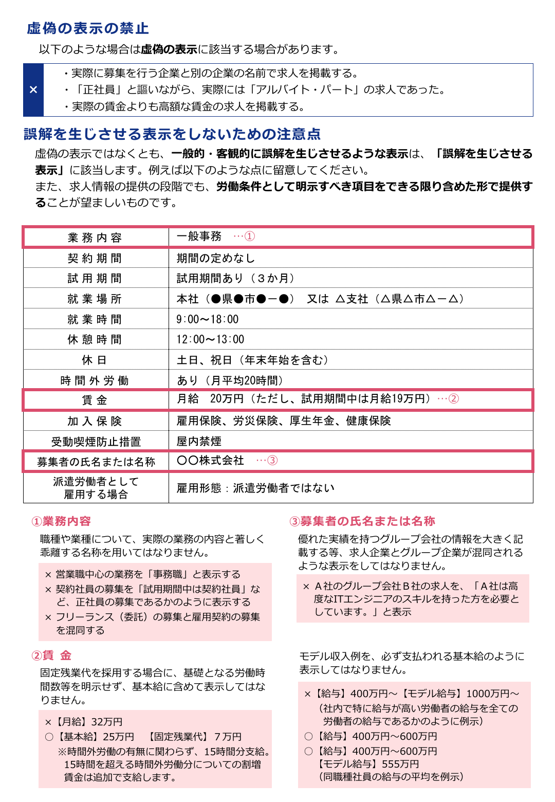

厚労省資料で確認する表示ルール

出典：厚生労働省「労働者の募集ルールが変わります（求人企業の皆さま）」2ページ（2022年9月資料、2026年10月6日確認）。
厚生労働省は、求人情報について虚偽表示だけでなく、一般的・客観的に誤解を生じさせる表示も禁じています。資料には、営業中心の仕事を「一般事務」と書く例や、固定残業代を基本給に含めたまま内訳を示さない例が載っています。生成AIの利用有無にかかわらず、求人票は正確で最新の状態に保つ必要があります。
AIに渡す前に求人事実を固定する
最初に作るのはプロンプトではなく、求人事実の台帳です。現場責任者が説明した仕事、雇用契約書や就業規則にある条件、採用担当が想定する人物像を同じ欄に混ぜると、AIはどれを確定事項として扱うか判断できません。
| 台帳の欄 | 根拠 | AIに許す処理 |
|---|---|---|
| 業務内容・募集背景 | 現場責任者の確認済みメモ | 要約、順序変更、平易な言い換え |
| 雇用形態・賃金・勤務地・時間 | 雇用条件、社内規程 | 指定書式への整形のみ |
| 必須条件・歓迎条件 | 採用基準 | 区分の明示。条件の追加は不可 |
| 仕事の魅力 | 具体的な役割、体制、働き方 | 事実の範囲で表現案を作る |
「若手が活躍」「裁量が大きい」のような語は、そのままでは根拠になりません。たとえば「営業2人目として新規開拓の手順づくりを担当する」と書けるなら、その事実から仕事の特徴を説明できます。性別や年齢など、職務の適性・能力と関係しない属性を採用条件へ混ぜないことも、この段階で確認します。
下書きは項目ごとに作り、数字と条件を再入力させない
求人票全体を一度に「魅力的に書いて」と頼むと、AIが不足部分を補い、確認していない制度や好条件を足すことがあります。職務内容、募集背景、必須条件、働き方を分けて下書きさせ、「入力にない事実を追加しない」「不明点は質問として残す」と指定します。
TechWorkerの設計例：出力を「確認済み事実」「表現案」「要確認」に分けます。採用担当は表現の好みより先に、要確認欄が空になったかを見ます。
タイトルや冒頭文は複数案を作れます。ただし「応募が集まる」「定着率が高い」といった結果は、実測がなければ書けません。募集背景と任せる仕事を最初に示し、候補者が自分に合うか判断できる情報を増やすことを優先します。
媒体別展開でも、変えるのは長さと順序だけ
求人媒体、自社採用ページ、スカウト文では読まれる場面が違います。共通台帳から、媒体の文字数と見出し構造に合わせて展開すれば、毎回ゼロから書く必要はありません。
一方、ある媒体では正社員、別の媒体では試用期間中の契約社員という説明を省く、といった出し分けはできません。賃金の上限だけを目立たせることも誤解につながります。媒体ごとの版には台帳の版番号を付け、条件変更時に全媒体を更新できるようにします。
掲載前の確認を、担当者の記憶だけに頼らない
掲載前には、AIが作った文章と求人事実台帳を別の担当者が照合します。業務内容、雇用形態、契約期間、試用期間、賃金と固定残業代、勤務地、労働時間、募集者名、必須条件を確認します。求人を終了したときや条件を変えたときは、掲載中の媒体を一覧で確認して更新します。
冒頭の2022年資料だけでは、現在の明示項目を確認しきれません。2024年4月施行の改正で、業務・就業場所それぞれの変更範囲と、有期契約の更新基準（期間や回数の上限を含む）が追加されました。これらも台帳へ入れ、掲載時点の厚生労働省の明示項目一覧と照合します。
評価する指標は、閲覧数、応募開始数、応募完了数、面接時に判明した条件の誤解などです。生成AI導入前後で計測条件をそろえ、初めて効果を判断できます。文章を早く作れたという感覚だけで、応募率や採用精度が上がったとは報告しません。
よくある質問
掲載前に、業務内容、雇用形態、賃金、勤務地、労働時間を根拠資料と照合してください。厚生労働省は虚偽表示と、一般的・客観的に誤解を生じさせる表示を禁じています。文章が自然でも、条件が正しいとは限りません。
案出しには使えますが、応募増を保証する表現は作れません。募集背景や担当業務など確認できる事実から複数案を作り、閲覧から応募までの実測で比較します。条件を良く見せるための誇張は避けます。
文字数や見出しの順番、説明の詳しさは変えられます。業務内容、賃金、雇用形態などの事実は共通の求人事実台帳から参照し、媒体間で食い違わないようにします。